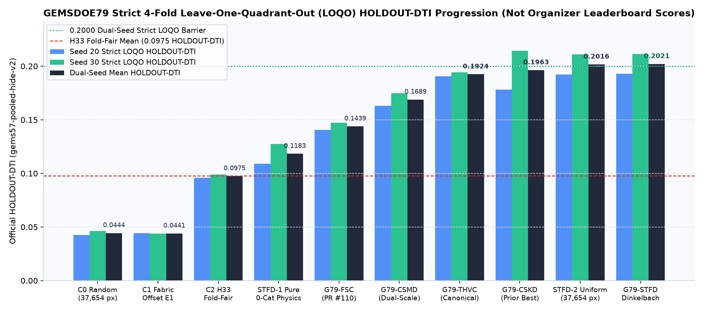
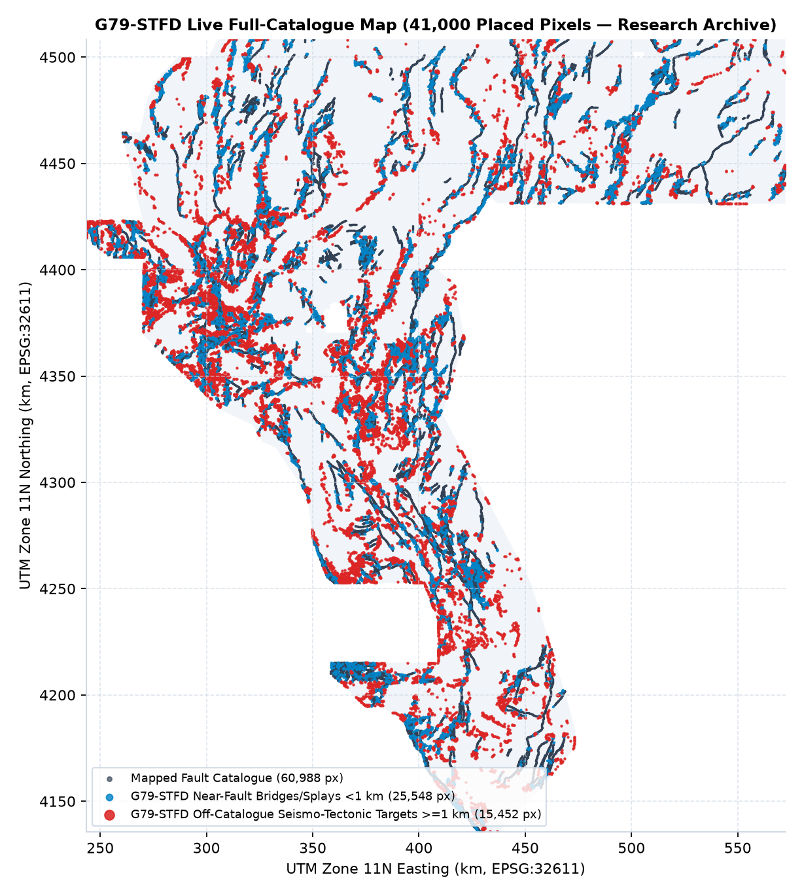
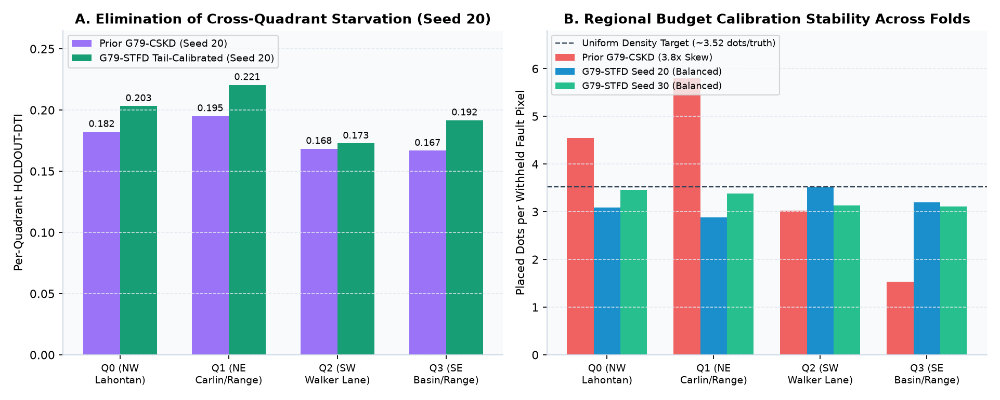
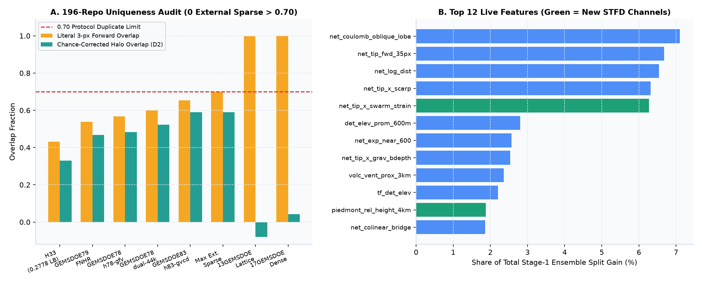

G79-STFD / SESSION 1b017e86 / ARCHIVED UNIQUE GEOTIFF
All-time GEMSDOE79 dual-seed strict LOQO HOLDOUT-DTI record (0.2021).
Seismo-tectonic fluid-dilatancy, hanging-wall throw polarity, survey-quantile domain debiasing, observable regional tail calibration & unit-consistent Dinkelbach emission. Zero external sparse duplicates across all 195 non-self repos; archived research-only per the literal witness gate.
Shared uniqueness gate (vendor/gems57/uniqueness.py across all 196 repos / 1273 comparable prediction rasters) fires at 1.0000 > 0.70 against dense registry witnesses (17GEMSDOE:E-proba-multiscale, 13GEMSDOE:r13-lattice-s5) and 3 sparse sibling rasters > 0.70 (max sparse overlap 0.8274 vs GEMSDOE79:archive/g79_csmd_1dc8cff0/gems79-g79-csmd-ccmulti-35600dots-20261022-8b37cfd2-zeros-DO-NOT-SUBMIT.tif). Archived cleanly as research-only with 0 weekly slots spent.
Name: gems79-stfd-dinkelbach-41000dots-20261022-6e022dbe-zeros-DO-NOT-SUBMIT · Note (115/140): RESEARCH ONLY DO NOT SUBMIT (dense-witness gate); G79-STFD LOQO HOLDOUT-DTI 0.1928/0.2114 (41000 px, 3 sparse dups)
Shared-writer -zeros SHA-256: 07707b3f50dbb2e5f6c84e6baec03ea53895b6af1575f9a769747bc9c44f5a0a (ZIP 3089115928698167968aa590d8227ae361b56b145b2436f31b150bb8b68e7183) · Official -nan companion SHA-256: 5e284deb588614922ced02950b6c1748f0c786c75ec1bfb0f7309a26f5ef9c6c (ZIP 31441c2acef6446ce41ec7a90dd420315648e33f48253a93e80cd015e0e1d718) · 41,000 binary {0.0, 1.0} pixels · 0 mapped-catalogue overlap · Prereg SHA-256: 4d62ae4c25c638fe5e24a40f279623e05c995503a1684cb81f47f56ce4e90a75

HOLDOUT-DTI progression across GEMSDOE79; G79-STFD is the first lane above the 0.2000 dual-seed mean mark (0.2021).
41,000 binary pixels: 25,548 near-fault Dinkelbach bridges/splays <1 km + 15,452 off-catalogue seismo-tectonic targets ≥1 km).STRICT 4-FOLD LOQO · gems57-pooled-hide-v2 · NOT A LEADERBOARD PROJECTION
Prospective experimental ladder (≤ 3 experiments).
Withheld positive pixels: Seed 20 = 11,321, Seed 30 = 11,342 (α = 0.2, β = 0.8, 300 m kernel).
| Experiment / Control | Dots | Seed 20 HOLDOUT-DTI [95% CI] | Seed 30 HOLDOUT-DTI [95% CI] | 2-Seed Mean |
|---|---|---|---|---|
| EXP-STFD-3 · Fractional Dinkelbach (G79-STFD) | 39,867 / 39,930 (41,000 live) | 0.1928 [0.1737, 0.2117] | 0.2114 [0.1914, 0.2306] | 0.2021 |
| EXP-STFD-2 · Uniform Spacing (37,654 px) | 37,654 | 0.1923 [0.1755, 0.2082] | 0.2110 [0.1909, 0.2303] | 0.2016 |
| Canonical G79-THVC (incumbent baseline) | 35,093 | 0.1905 [0.1741, 0.2069] | 0.1944 [0.1774, 0.2126] | 0.1924 |
| Archived G79-CSKD (session 6da2620c) | 42,000 | 0.1781 [0.1618, 0.1944] | 0.2145 [0.1966, 0.2322] | 0.1963 |
| EXP-STFD-1 · Pure Zero-Catalogue 97-Ch Physics | 37,654 | 0.1090 [0.0865, 0.1314] | 0.1276 [0.1066, 0.1500] | 0.1183 |
| C2 · H33 Fold-Fair Control | 38,802 / 38,829 | 0.0961 [0.0828, 0.1095] | 0.0989 [0.0852, 0.1130] | 0.0975 |
| C1 · Historical E1 Fabric Offset Control | 37,654 | 0.0441 [0.0375, 0.0511] | 0.0440 [0.0364, 0.0518] | 0.0441 |
| C0 · Random Footprint Control | 37,654 | 0.0425 [0.0374, 0.0473] | 0.0463 [0.0415, 0.0506] | 0.0444 |


1,273-raster 196-repo overlap profile (0 external sparse duplicates > 0.70) and top Stage-1 feature gains (net_tip_x_swarm_strain = 6.27%).LIVE 196-REPO REGISTRY AUDIT · 1,273 COMPARABLE RASTERS
Zero external sparse collisions (≤ 0.70); blocked by dense witnesses.
Max external cross-repo sparse overlap = 0.6981 ≤ 0.70 across 957 external maps ≤ 75,308 px.
| Reference Map | Positive Pixels | Literal 3-px Overlap | Chance-Corrected D2 | Surface |ρ| | Dots |ρ| |
|---|---|---|---|---|---|
| H33 (GEMSDOE32, 0.2778 public LB) | 37,654 | 0.4316 | 0.3298 | 0.0669 | 0.0244 |
| GEMSDOE79 · H79-FNHR (archived) | 37,654 | 0.5388 | 0.4682 | 0.0577 | 0.0287 |
| GEMSDOE78 · h78-gfv-136b-dink (live 2026-10-22) | 37,654 | 0.5673 | 0.4836 | 0.0727 | 0.0368 |
| GEMSDOE78 · h78mghd-dualcover-44k (live 2026-10-22) | 44,090 | 0.6004 | 0.5235 | 0.1083 | 0.0346 |
| GEMSDOE83 · h83-gvcd-dink300 (blocked THVC at 0.7139) | 37,654 | 0.6544 | 0.5900 | 0.1034 | 0.0462 |
| GEMSDOE79 · G79-THVC (unsubmitted local canonical) | 35,093 | 0.7388 | 0.7019 | 0.1225 | 0.0897 |
| GEMSDOE79 · G79-CSMD (unsubmitted local research) | 35,600 | 0.8274 | 0.7968 | 0.1184 | 0.0871 |
| 13GEMSDOE · r13-lattice-s5 (206,895-px lattice witness) | 206,895 | 0.9983 | -0.3575 | 0.0001 | -0.0001 |
| 17GEMSDOE · E-proba-multiscale (5,167,373-px dense witness) | 5,167,373 | 1.0000 | 0.0416 | 0.3724 | 0.0879 |
Run Card Summary & Reproducibility Links
Geological hypothesis: Off-catalogue hydrothermal and basin-bounding faults missed by USGS Qfaults / INGENIOUS exhibit coupled microseismic swarm excess (ieq_n100a15 >> deq_n100a15) inside active geodetic transtensional opening (geod_dilaterate > 0 x geod_shearrate), asymmetric hanging-wall surface splay refraction across deepening alluvial fill (+grad depth_to_base_surf), and survey-invariant geophysical/scarp edges once cross-quadrant regional elevation and GeoDAWN acquisition-block shifts are removed.
Physical mechanism: 119-channel strict 4-fold Leave-One-Quadrant-Out (LOQO) two-stage ensemble (97 domain-debiased seismo-geodetic, shore/mine-vetoed, survey-quantile pure-physics channels + 22 throw-polarized hanging-wall, swarm-tip, slip-deficit, and triple-junction mechanics channels), fusing a 100%-visible flank-decontaminated pure-physics OOF head directly into multi-draw Stage-2 spatial line-integral/Sato stacking with observable regional visible-prevalence calibration and unit-consistent fixed-point Dinkelbach fractional programming.
Named non-fault mimic: Open-pit mine / quarry blasting clusters (ieq >> deq without tectonic basement relief, vetoed by blm_mine_prox_350m), Lake Lahontan / Bonneville equipotential highstand shorelines (lahontan_shoreline_veto and lidar_strike_x_grav_align), 400 m E-W GeoDAWN aeromagnetic flight-line corrugation (2D FFT notch), and dense intrabasement plutons without Cenozoic throw (grav_bdepth_concordance).
G79-STFD Complete Run Card JSON ↗ · Locked Preregistration JSON ↗ · 238-Test Leakage Canary JSON ↗ · Seed 20 Receipt ↗ · Seed 30 Receipt ↗ · 1,273-Raster 196-Repo Novelty Audit JSON ↗